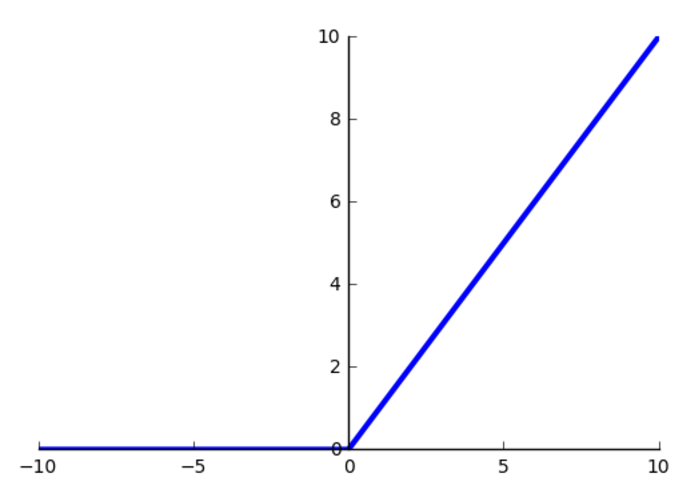
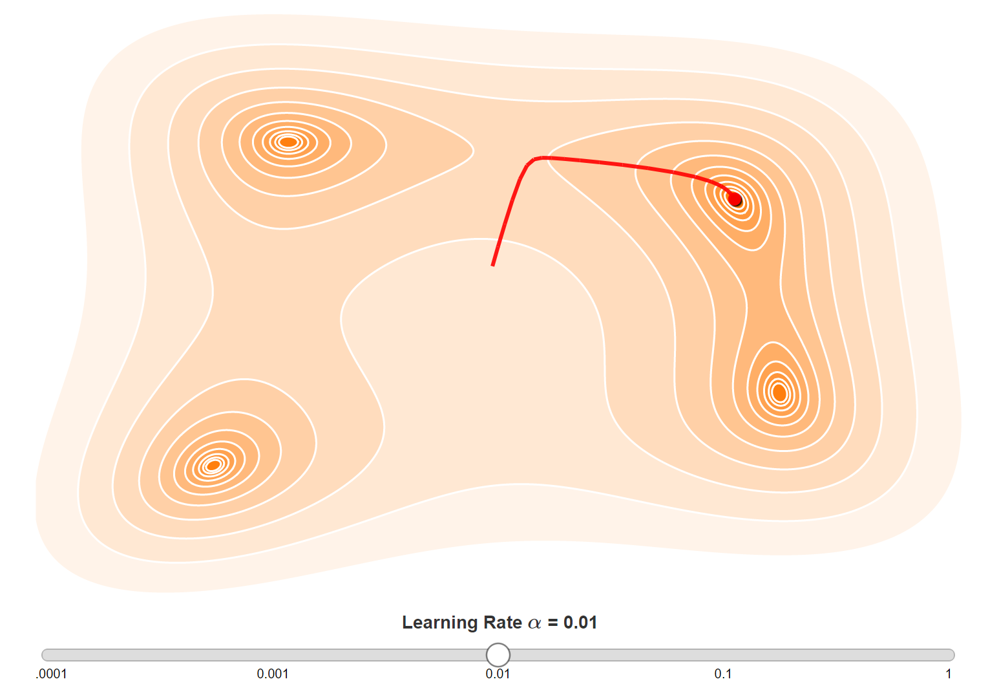

Deep Learning Workshop
With TensorFlow
Oliver Zeigermann / @DJCordhose
https://djcordhose.github.io/ai/2018_deep_learning_workshop.htmlThe Basics
How does Machine Learning work?
Customer Data - Car Insurance

How would you rank me (47) for a car with 160 km/h top speed?
Paper Exercise #1 - Understanding the Supervised Learning Approach
Manually cluster areas of different customer types on the upper part of the handout
- dark (green): good customer
- light (yellow): mediocre customers
- middle (red): red customers
Make sure you draw with pressure
Plot Twist
Why predicting data that we already know?
Generalisation, not perfect reproduction is the objective
Exercise #1, Part2 - How well did you generalize?
Turn the page and redraw the lines you printed through from the first page
Get an estimate of the misclassified samples on both diagrams
What do you think, is this result worse?
What would you have done differently if you had been given this information before (that it is all about generalisation)?

Sample Solution: Fine

Train

Test
Not ideal, especially in the middle where everything mixes
Sample Solution: Coarse

Train

Test
Not so bad - we humans are good at clustering in 2-d
How do we make an automatic, general prediction?
Classic Approach: Code Rules by hand
if age < 25:
if speed > 180:
return red
else:
return yellow
if age > 75:
return red
if km_per_year > 50:
return red
if km_per_year > 35:
return yellow
return green
No great results
approx. 43% correct predictions
Drawing Decision Boundaries to understand why this does not perform well
Decision Boundaries for the Hand Coded Rules
approx. 43% correct predictions (guessing would be 33%)
Do we have all the rules? Are they even correct?
Different Approach: Machine Learning

There are different types of machine learning
Best known results using TensorFlow

only approx. 79% accuracy on train data, but also 77% on test data
The Artificial Neuron
The basis of Neural Networks
How does an artificial neuron work?

There are several activation functions you may encounter in practice:
Step, switching from zero to one

original version simulating transition from passive to active
Sigmoid, floating from 0 to 1

continuously differentiable version of step function
Tangens Hyperbolicus

floating from -1 to 1
Relu: Rectified Linear Unit
Mostly used for Convolutional Networks (more later)
Artificial neuron to neural networks


How many hidden layers?
In Theory a single hidden can approximate any function
In practice 2-3 hidden layers seem optimal
Convolutional Networks often have more than 100 layers (more on that later)
http://cs231n.github.io/neural-networks-1/#power
https://beta.observablehq.com/@nstrayer/exploring-the-universal-approximation-theorem
Tensorflow Playground
Understanding the Basics of Neural Networks

Experiment
Make some sense of artificial neurons and neural networks using the TensorFlow Playground
- What can you do with a single neuron and why?
- Configure a minimal network to deliver a good result on the initial data set
- Get an intuition for the learning rate - can you change the learning rate in such a way the network no longer trains properly?
Applying Deep Neural Networks to our problem
Using TensorFlow
 https://www.tensorflow.org/
https://www.tensorflow.org/

A sample architecture using 2 fully connected hidden layers
inputs = tf.keras.Input(name='input', shape=(3, ))
x = tf.keras.layers.Dense(100, name='hidden1', activation='relu')(inputs)
x = tf.keras.layers.Dense(100, name='hidden2', activation='relu')(x)
Softmax: Categories with likelyhoods

predictions = tf.keras.layers.Dense(3, name='softmax',
activation='softmax')(x)
Where is the cost / loss / error?
The loss is calculated from the difference between the softmax output and the known true category
categorical_crossentropy is the algorithm to calculate this loss
model = tf.keras.models.Model(inputs=inputs, outputs=predictions)
model.compile(optimizer='adam',
loss='categorical_crossentropy',
metrics=['accuracy'])
Bringing it all together
# splitting test from training data
X_train, X_test, y_train, y_test =
train_test_split(X, y, test_size=0.4)
# convert the numerical encoding of category
# to one hot to match softmax
y_train_categorical = to_categorical(y_train, 3)
# kick off training for 1000 iterations
model.fit(X_train, y_train_categorical, epochs=1000)
What does the neural network learn?
All the weights of a the neurons
model.summary()
_________________________________________________________________
Layer (type) Output Shape Param #
=================================================================
input (InputLayer) (None, 3) 0
_________________________________________________________________
hidden1 (Dense) (None, 100) 400
_________________________________________________________________
hidden2 (Dense) (None, 100) 10100
_________________________________________________________________
softmax (Dense) (None, 3) 303
=================================================================
Total params: 10,803
Trainable params: 10,803
Non-trainable params: 0
_________________________________________________________________Visualizing the learning Process
(Stochastic) Gradient Descent (SGD)
Minimizing the error by changing the trainable parameters
For just 2 parameters you can image a scenary with hills and you try to find the deepest valley

http://www.benfrederickson.com/numerical-optimization/
https://distill.pub/2017/momentum/
A too high learning rate might over-shoot the mimimum, a too low one might be too slow and never reach it

from keras.layers import Dropout
x = Dense(100, name='hidden1', activation='relu')(inputs)
x = Dropout(0.15)(x)
x = Dense(100, name='hidden2', activation='relu')(x)
x = Dropout(0.15)(x)

Let the GPU burn
Convolutional neural networks
Neural Networks are best for non symbolic data
Like classifying images
Use of GPU for non symbolic data

https://twitter.com/chrisalbon/status/907028933693947904?s=03
Why the recent break throughs?

Cray X-MP
Supercomputer (1982)

Titan 5 im Gamer PC (2017)
... but we also have
- Smarter Learning Strategies (more hidden layers = Deep Learning, Convolutional Layers)
- Big Data
Architectures of Convolutional Neural Networks: VGG

There are a number of specialized neural network layers
How do Convolutions work - Image Kernels
You might know from Photoshop etc., used in Convolutional Neural Networks

Experiment with Image Kernels
- How can a matrix of numbers can represent an image? How could you encode color?
- Explain the effect the filter kernels Sharpen and Blur have on the sample image - explain the effect of the specific values to the result
- Starting from the identity kernel - how can you create a filter that highlights edges on the top of shown digits? What about the bottom?
http://setosa.io/ev/image-kernels/
Sample image:
https://github.com/DJCordhose/speed-limit-signs/raw/master/data/real-world/4/100-sky-cutoff-detail.jpg
Relu: Rectified Linear Unit
Mostly used for Convolutional Networks
Sample Architecture: Google Inception V3

MNIST - Using a model already trained
Exploring the different types layers together

Practical Deep Learning with TensorFlow
Creating a convolutional model
const model = tf.sequential();
model.add(tf.layers.conv2d({
inputShape: [28, 28, 1],
kernelSize: 5,
filters: 8,
activation: 'relu'
}));
model.add(tf.layers.maxPooling2d({poolSize: [2, 2]}));
model.add(tf.layers.flatten());
model.add(tf.layers.dense({units: 10, activation: 'softmax'}));
model.compile({
optimizer: 'sgd',
loss: 'categoricalCrossentropy',
metrics: ['accuracy'],
});
Exercise Option 1
Use tensorflow.js to experiment on the MNIST data set
https://djcordhose.github.io/ai/code/mnist/
- clone https://github.com/DJCordhose/ai and locate docs/code/mnist
- run a local http server in this folder
- make your changes to
model.js - Experiment with number of epochs (TRAIN_BATCHES), learning rate, and number of filters in convolutional layers
- Monitor GPU performance using the tools of your OS (try to reach 100% utilization)
- Advanced: add or remove layers
Reference: https://js.tensorflow.org/api/0.11.2/
Simple RNNs
Recurrent Neural Networks
Text and sequences are special

Motivation
Traditional Networks have no memory of previous events
Number to Number enconding needs to factor in carry
Start with TensorFlow.js Core Concepts
It's all about matrix operations
const a = tf.tensor1d([1, 2, 3]);
const b = tf.scalar(2);
// a is not modified, result is a new tensor
const result = a.add(b);
const data = await result.data();
console.log(data); // Float32Array([3, 4, 5]
Minimal Example
https://js.tensorflow.org/tutorials/core-concepts.html